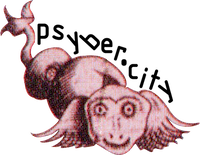

<mat-sidenav-container>
  <mat-sidenav mode="side" opened>
    <div class="sidenav-links">
      <div class="top-menu">
        <span role="link" tabindex="0" routerLink="home">AI</span>
        <nav>
          <mat-icon role="link" tabindex="0" routerLink="home">home</mat-icon>
          <mat-icon role="link" tabindex="0" routerLink="compare"
            >compare_arrows</mat-icon
          >
        </nav>
      </div>
      <div class="bottom-link">
        <div
          class="psybercity"
          role="link"
          tabindex="0"
          (click)="goToURL('https://psyber.city/')"
        >
          
        </div>
      </div>
    </div>
  </mat-sidenav>
  <mat-sidenav-content>
    <div class="content">
      <router-outlet></router-outlet>
    </div>
  </mat-sidenav-content>
</mat-sidenav-container>

<div class="social-links">
  <div
    id="wrapper2"
    role="link"
    tabindex="0"
    (click)="goToURL('https://github.com/mandarini/ai-showcase')"
  >
    <div class="cube">
      <div>view the code</div>
      <div>/></div>
      <div></div>
      <div></div>
      <div></div>
      <div></div>
    </div>
  </div>
</div>
